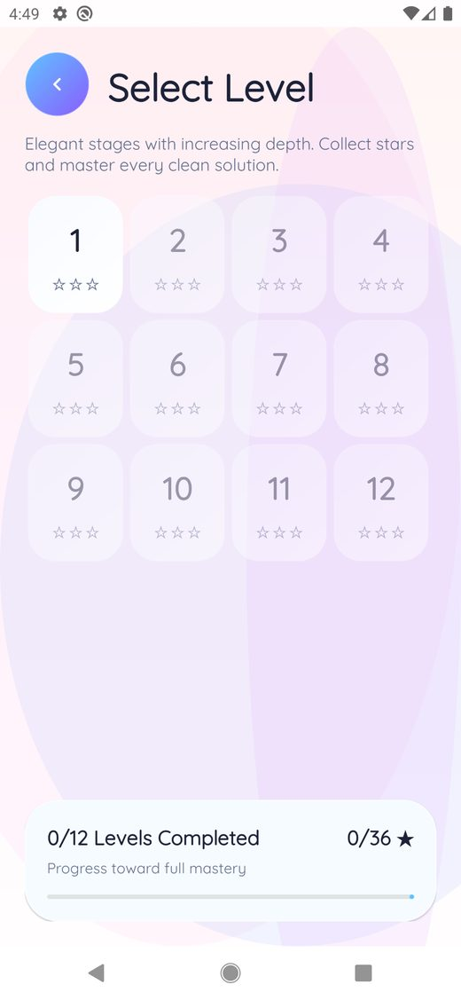
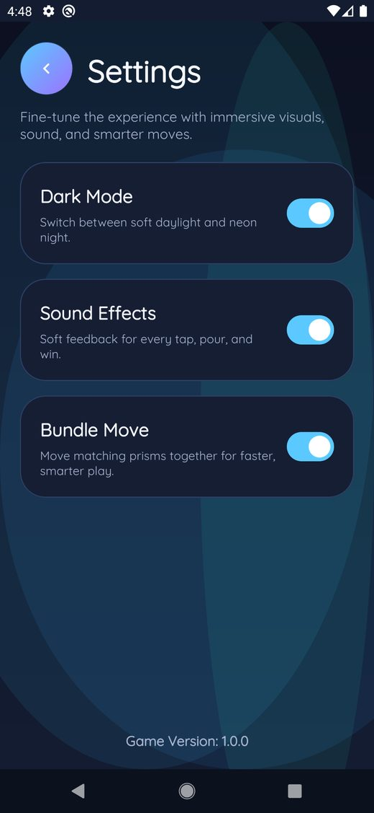
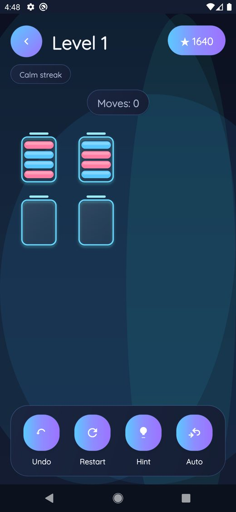

🧩
Color sorting gameplay
Move matching prisms into the correct tubes and solve each clean arrangement.
Sort glowing prisms into tubes, plan your moves carefully, and complete elegant handcrafted levels with increasing difficulty.
Beautiful modern UI, smooth animations, dark mode, hints, undo, restart, and auto move options.
Built for players who want a calm puzzle game with satisfying decisions and clean visual feedback.
Move matching prisms into the correct tubes and solve each clean arrangement.
Complete levels, track progress, and master every handcrafted challenge.
Use Undo, Restart, Hint, and Auto Move options when you need extra support.
Soft daylight screens and premium neon night visuals match the game’s calm, elegant style.





Download Prism Pour Puzzle and start solving elegant color sorting puzzles today.